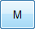
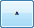
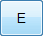

Salvare i parametri nella memoria del CN
Quando vengono modificati dei parametri e si desidera rendere permanente tale modifica, eseguire questa procedura sul telecomando:

per accedere al menù principale;
per scorrere il menù principale fino alla voce Parametri;
per accedere al menù Parametri; il display mostra la scritta SALVA PARAMETRI;